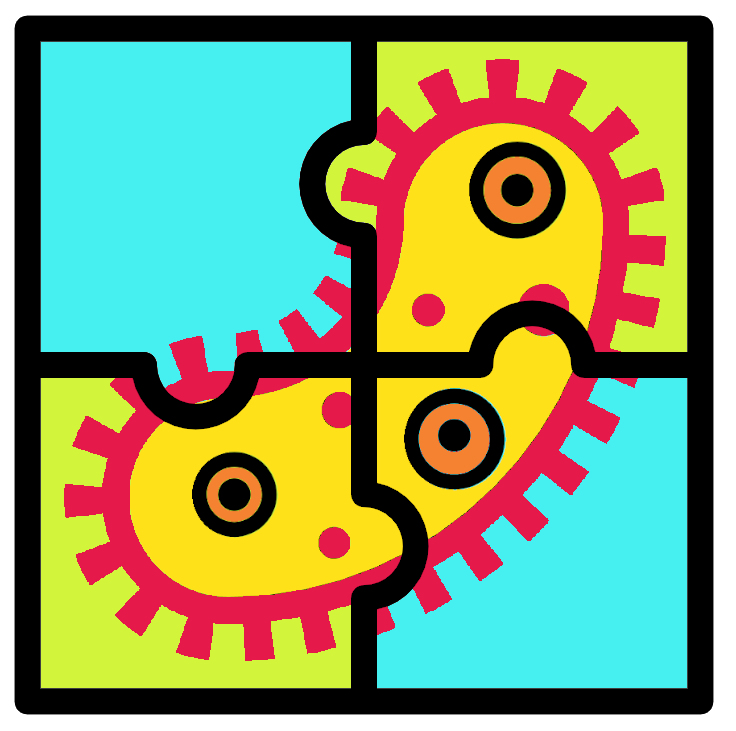

Genome assembly resources
2022-06-16
Chapter 1 Videos, slides, & files

1.3 Workshop files
The below compressed directory is provided so you may attempt the workshop materials on a computer/cluster available to you.
Note:
- The file locations will not match
- The
. usescripts will not work. You will have to install your own programs. I recommend looking into conda to more easily install programs.